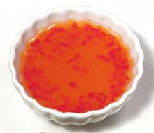

 |
Lemon Butter SauceEuro - American | ||||
| Makes: Effort: Sched: DoAhead: |
var * 10 min Yes |
Lemon butter sauce, often used with fish and various vegetables, is pretty much anything you want that includes lemon and butter as major ingredients. Those given here are my favorites. | |||
| Recipes as given here are quite lemony, but you can balance to your taste by changing the ratio of wine to lemon juice. Lemon butter sauce can be thickened with a little corn starch suspended in water but I usually don't. | |||||
|
|
Lemon Wine Sauce for Fish now has its own page. This is the sauce nearly every fish on our Varieties of Fish page (very large page) was tested. |
| #2 For Artichokes | This recipe makes enough sauce for two large artichokes. | |||
|
|
1/3
1/3 1/4 |
c
c c |
Lemon Juice
White Wine dry Butter, salted |
|
| #3 For Asparagus, Broccoli, etc. | ||||
|
|
1/4
1/4 2 tt |
c
c T |
Lemon Juice
White Wine dry Butter, salted Pepper black |
|